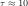
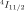
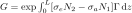
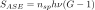
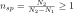
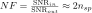
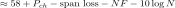
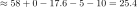
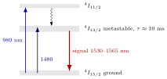
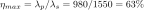

limits power, and amplified spontaneous emission sets a noise figure
limits power, and amplified spontaneous emission sets a noise figure EDFA model
Er levels: (ground), (metastable,
levels: (ground), (metastable,

ms),
(980 nm pump band, fast decay) (Mears et al. 1987). Three-level system: the metastable level is inverted by the pump; long makes gain dynamics slow (ms), so no inter-channel crosstalk at Gb/s (Desurvire et al. 1987). Gain
makes gain dynamics slow (ms), so no inter-channel crosstalk at Gb/s (Desurvire et al. 1987). Gain 
.Noise
Each amplifier adds ASE with spectral density

per polarisation,
. Signal–ASE beat noise at the detector gives
for large : quantum limit 3 dB. Chained amplifiers: OSNR
: quantum limit 3 dB. Chained amplifiers: OSNR 
dB (0.1 nm bandwidth, 1550 nm).SOA
A laser diode without feedback (AR-coated facets). Gain recovery ~100 ps: patterning at high bit rates but useful for all-optical switching (cross-gain/cross-phase modulation). NF 6–9 dB.
Worked example
80 km spans of 0.22 dB/km (17.6 dB loss) with EDFAs of NF 5 dB, 0 dBm per channel, 10 spans: OSNR

dB, enough for 10 Gb/s OOK (needs ~15 dB) and for 100 Gb/s coherent QPSK (~12–15 dB).Picture: Er levels in silica

in silica: pumped at 980 nm or 1480 nm, the metastable level amplifies signals at 1530–1565 nm.Pumping at 980 nm reaches an upper band that decays in µs to the metastable level (low noise, full inversion possible); 1480 nm pumps the top of the band directly (higher efficiency, less inversion).
Engineering applications
Long-haul and submarine DWDM links (amplifiers every 50–100 km), booster and preamplifiers, fibre lasers (Er, Yb), Raman amplification using the transmission fibre itself, SOAs in passive optical networks and photonic integrated circuits.
Exam-style exercise
An EDFA amplifies a −30 dBm signal at 1550 nm by 30 dB with a 980 nm pump. (a) Output power. (b) Maximum (quantum-limited) pump-to-signal efficiency and the minimum pump for 10 mW output. (c) With NF = 5 dB, OSNR degradation of the signal.
Solution
(a) 0 dBm = 1 mW. (b) Each pump photon yields at most one signal photon:

→ ≥ 15.8 mW of absorbed pump for 10 mW. (c) The electrical SNR after the amplifier is 5 dB worse than before it (shot-noise-limited input); a chain of identical spans adds
identical spans adds  dB more.
dB more.
Pitfall
The noise figure is defined against a shot-noise-limited input; an amplifier cannot improve SNR, it only overcomes the thermal noise of the receiver that follows.